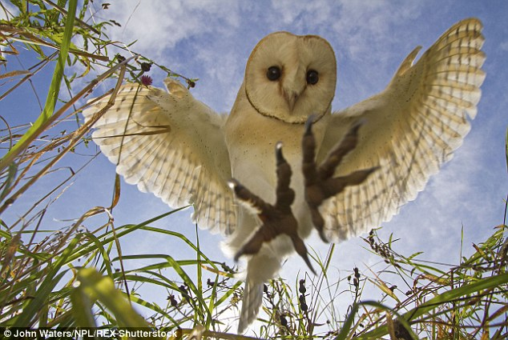
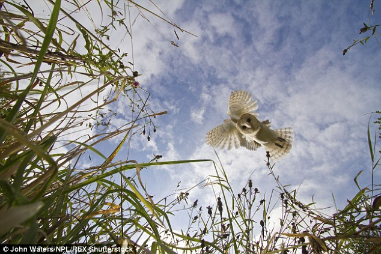

Barn Owls are often found in open and partly open country including grasslands, marshes, and agricultural areas. They are often around human habitation. They are cavity-nesting birds that use natural as well as human-created cavities. Preferred man-made structures include large platforms within barns and silos, tunnels dug into silage in roofed or topless silos, and barn cupola shelves.
 